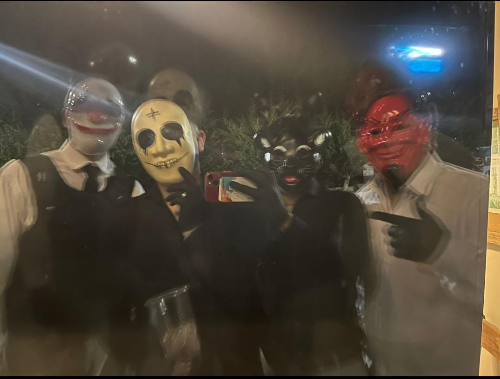

¿Sos más Turro o Alto Wachin?

🔥 Votar Turro
💪 Votar Alto Wachin
Turro:
0
| Alto Wachin:
0
Hacé clic en una imagen para ver una descripción random del contexto.
 Turro: 0 |
Alto Wachin: 0
Hacé clic en una imagen para ver una descripción random del contexto.
Turro: 0 |
Alto Wachin: 0
Hacé clic en una imagen para ver una descripción random del contexto.